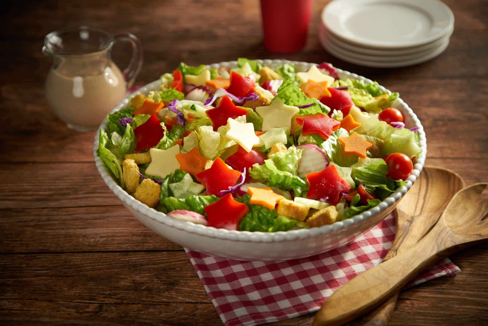

American Potato Salad
Description
Just a good old fashioned,down home potato salad recipe that brings back
memories of
picnics in the park and family gatherings.Wonderful as
it is or make it your own by
additional ingredients of your choice.
| Ingredients | Cooking time | Portion |
|---|---|---|
| 9 ingredients | 45 minutes | 2 people |
Ingredients
- 5 pounds red potatoes
- 6 eggs
- 2 cups mayonnaise
- 1 onion, diced
- 2 green onions, thinly sliced
- 1 small green bell pepper, seeded and diced
- 3 stalks celery, thinly sliced
- 2 teaspoons salt
- 1 teaspoon ground black pepper
Step by Step
- Step 1
- Step 2
- Step 3
Bring a large pot of water to a boil. Add potatoes, and cook for 15 to
minutes, or until tender but still firm. Drain, cool and cut into
cubes.
Place eggs in a saucepan and cover with cold water. Bring water to a
boil and
immediately remove from heat. Cover and let eggs stand
in hot water for 10 to 12 minutes.
Remove from hot water, cool,
peel and chop.
In a large bowl, combine chopped potatoes and eggs. Mix together
mayonnaise,
chopped onion, green onion, green pepper, and
celery. Season with salt and pepper, then mix well.
, and
refrigerate for several hours or overnight.